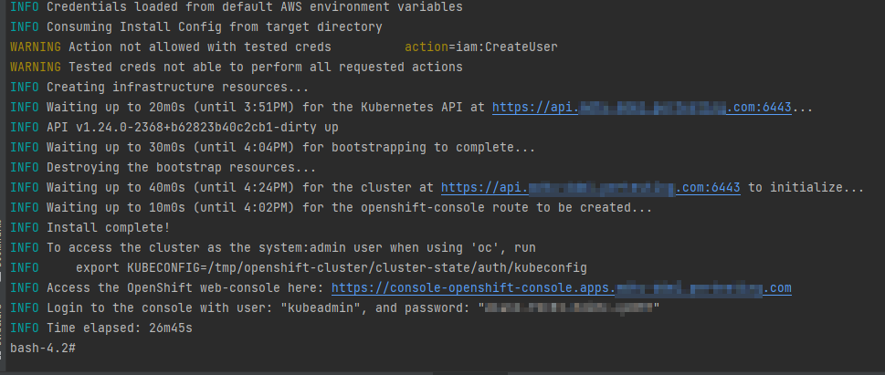
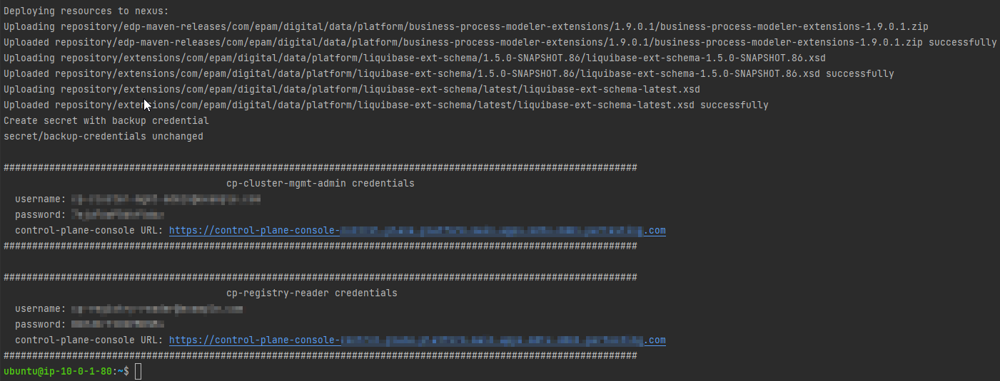
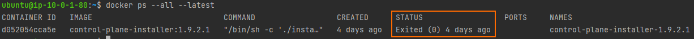
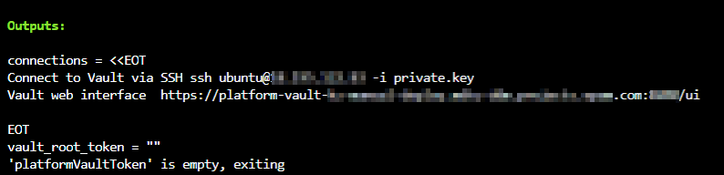
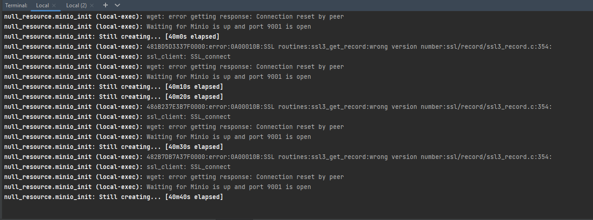

Deploying the Platform from scratch in a public AWS cloud environment
- 1. Prerequisites
- 2. Deploying additional resources for installing OKD cluster in AWS
- 3. Preparing for OKD cluster installation in AWS
- 4. Running the OKD4 installer and deploying an empty OKD4 cluster
- 5. Replacing self-signed certificates with trusted certificates
- 6. Preparing and running the Installer to deploy and update the Platform in the OKD cluster
- 7. Common errors during platform deployment
| 🌠This document is available in both English and Ukrainian. Use the language toggle in the top right corner to switch between versions. |
This guide provides detailed information on deploying the Platform from scratch in an AWS environment, starting from creating an AWS account and ending with installing the Platform with all additional configurations.
1. Prerequisites
Before deploying and configuring the platform, be sure to check the following artifacts.
1.1. Documentation artifacts
-
Updating documents section — needed only for the Platform updating procedure.
1.2. Creating an AWS account
Before installing OpenShift Container Platform on Amazon Web Services (AWS), you need to create an AWS account.
This can be done using the official documentation on the AWS website: How do I create and activate a new AWS account?
1.3. Setting up an AWS account
Before installing OpenShift Container Platform, you need to configure your Amazon Web Services (AWS) account.
1.3.1. Setting up Route 53
To install OpenShift Container Platform, you need to register a domain. This can be done using the Route 53 service, or you can use any other domain name registrar.
Also, the Amazon Web Services (AWS) account being used must have a dedicated public hosting zone in the Route 53 service.
| Detailed description can be found in the official documentation on the OKD website: Configuring Route 53. |
1.3.2. Setting up an external domain
If a non-AWS Route 53 domain name registrar was used to create the domain, domain delegation must be performed. To do this, follow these steps:
-
Go to the created AWS account and create a public hosting zone in the Route 53 service (as described in p. Setting up Route 53). Name it the same as the created external domain.
-
Enter the created public hosting zone and view the record of type
NS(Name Servers — these are the name servers that respond to DNS queries for the domain). The value will list the name servers. Save the names of these servers for use in subsequent steps. -
Go to the external domain name registrar where the domain was created.
-
Open the settings of this domain and find the settings related to NS servers;
-
Edit the NS servers according to the NS servers taken from the public hosting zone in the AWS account.
1.3.3. AWS account limits
The OpenShift Container Platform cluster uses several Amazon Web Services (AWS) components, and standard service limits affect the cluster installation possibility.
A list of AWS components whose limits may affect the installation and operation of the OpenShift Container Platform cluster is provided in the documentation on the OKD website: AWS account limits.
| You must also increase the CPU limit for on-demand virtual machines in your Amazon Web Services (AWS) account. The necessary actions for this are described in the official documentation on the AWS website: How do I request an EC2 vCPU limit increase for my On-Demand Instance? |
1.3.4. Creating an IAM user
-
Before installing OpenShift Container Platform, create an IAM user, using the official documentation on the AWS website: Creating an IAM user in your AWS account.
-
In addition, perform the following important requirements:
-
Remove any Service control policies (SCPs) restrictions from the AWS account.
During cluster creation, an associated AWS OpenID Connect (OIDC) identity provider is also created. This OIDC provider configuration is based on an open key located in the AWS region us-east-1. Clients with AWS SCP must allow the use of the AWS regionus-east-1even if the cluster is deployed in another region. Without proper policy settings, permission errors may occur immediately, as the OKD installer checks the correctness of these settings.Detailed information can be obtained in the official documentation, in section 1.1. DEPLOYMENT PREREQUISITES of the Red Hat OpenShift Service on AWS 4. Prepare your environment document. -
Correctly set the permissions boundary for the created IAM user.
Below is an example of a permissions boundary policy. You can use it or completely remove any permissions boundary.
Example. Setting the permissions boundary policy
{ "Version": "2012-10-17", "Statement": [ { "Effect": "Allow", "NotAction": [ "iam:*" ], "Resource": "*" }, { "Effect": "Allow", "Action": [ "iam:Get*", "iam:List*", "iam:Tag*", "iam:Untag*", "iam:GenerateServiceLastAccessedDetails", "iam:GenerateCredentialReport", "iam:SimulateCustomPolicy", "iam:SimulatePrincipalPolicy", "iam:UploadSSHPublicKey", "iam:UpdateServerCertificate", "iam:CreateInstanceProfile", "iam:CreatePolicy", "iam:DeletePolicy", "iam:CreatePolicyVersion", "iam:DeletePolicyVersion", "iam:SetDefaultPolicyVersion", "iam:CreateServiceLinkedRole", "iam:DeleteServiceLinkedRole", "iam:CreateInstanceProfile", "iam:AddRoleToInstanceProfile", "iam:DeleteInstanceProfile", "iam:RemoveRoleFromInstanceProfile", "iam:UpdateRole", "iam:UpdateRoleDescription", "iam:DeleteRole", "iam:PassRole", "iam:DetachRolePolicy", "iam:DeleteRolePolicy", "iam:UpdateAssumeRolePolicy", "iam:CreateGroup", "iam:UpdateGroup", "iam:AddUserToGroup", "iam:RemoveUserFromGroup", "iam:PutGroupPolicy", "iam:DetachGroupPolicy", "iam:DetachUserPolicy", "iam:DeleteGroupPolicy", "iam:DeleteGroup", "iam:DeleteUserPolicy", "iam:AttachUserPolicy", "iam:AttachGroupPolicy", "iam:PutUserPolicy", "iam:DeleteUser", "iam:CreateRole", "iam:AttachRolePolicy", "iam:PutRolePermissionsBoundary", "iam:PutRolePolicy" ], "Resource": "*" }, { "Effect": "Allow", "Action": [ "iam:CreateAccessKey", "iam:DeleteAccessKey", "iam:UpdateAccessKey", "iam:CreateLoginProfile", "iam:DeleteLoginProfile", "iam:UpdateLoginProfile", "iam:ChangePassword", "iam:CreateVirtualMFADevice", "iam:EnableMFADevice", "iam:ResyncMFADevice", "iam:DeleteVirtualMFADevice", "iam:DeactivateMFADevice", "iam:CreateServiceSpecificCredential", "iam:UpdateServiceSpecificCredential", "iam:ResetServiceSpecificCredential", "iam:DeleteServiceSpecificCredential" ], "Resource": "*" } ] }
-
| The process of creating an IAM user is described in detail in the official documentation on the OKD website: Creating an IAM user. |
1.3.5. Required AWS permissions for the IAM user
To deploy all components of the OpenShift Container Platform cluster, the IAM user needs permissions, which must be attached to this user.
An example of such permissions is provided in the documentation on the OKD website: Required AWS permissions for the IAM user.
1.4. Creating additional accounts
Before installing OpenShift Container Platform on Amazon Web Services (AWS), you need to create a Docker Hub and Red Hat account.
This is necessary to generate the docker pull secret, which will be used later.
1.4.1. Creating a Docker Hub account
-
Some services use images located in Docker Hub repositories. To be able to use them, you need to create an account using the official documentation on the Docker website: Docker ID accounts.
-
Additionally, you may encounter a limit on the number of image downloads per day. This will prevent services from starting. To avoid this, you need to upgrade your subscription to the Pro level. This will change the limit from 200 docker images/6 hours to 5000 docker images/day. This can be done using the official documentation on the Docker website: Upgrade your subscription.
1.4.2. Creating a Red Hat account
To download the necessary images for installing OpenShift Container Platform, you need to create a Red Hat Account. Detailed instructions on how to do this are described in the official documentation: Red Hat Login ID and Account.
This is necessary to download the generated pull secret later (detailed in section Preparing for OKD cluster installation in AWS). It will allow authentication and downloading container images for OpenShift Container Platform components.
2. Deploying additional resources for installing OKD cluster in AWS
To successfully install the cluster and platform, the following resources need to be deployed in AWS. The diagram below shows the infrastructure scheme with these resources. This is done to simplify the platform installation and avoid undesirable errors that may be associated with installing from a local computer.

2.1. Description of additional resources
A more detailed description of additional resources from the diagram is shown below:
-
S3 bucket—used for storing the Terraform state;
-
DynamoDB table—used for storing information about Terraform state locking;
-
NAT Gateway—used to provide a private server with internet access;
-
Bastion—used as an intermediate server to provide secure and restricted access to the server in the private network. Later an SSH tunnel will be created to the deployer-node through this bastion;
-
Deployer-node—a server in the private network through which the cluster and Platform installation will take place.
These resources can be deployed using the prepared Terraform code in the following steps.
2.1.1. Recommended bastion settings
The table below shows the recommended settings for the bastion.
| No. | Setting option | Value |
|---|---|---|
1 |
Instance type |
t2.nano |
2 |
vCPUs |
1 |
3 |
RAM |
0.5 GiB |
4 |
CPU Credits/hr |
3 |
5 |
Platform |
Ubuntu |
6 |
AMI name |
ubuntu-bionic-18.04-amd64-server-20210224 |
7 |
Volume |
8 Gb |
2.1.2. Recommended deployer-node settings
The table below shows the recommended settings for the deployer-node.
| No. | Setting option | Value |
|---|---|---|
1 |
Instance type |
t2.medium |
2 |
vCPUs |
2 |
3 |
RAM |
4 GiB |
4 |
CPU Credits/hr |
24 |
5 |
Platform |
Ubuntu |
6 |
AMI name |
ubuntu-bionic-18.04-amd64-server-20210224 |
7 |
Volume |
150 Gb |
2.2. Additional settings
2.2.1. Installing the necessary tools
To proceed, you need to install the necessary tools on your local computer:
-
unzip;
You can check the correctness of the tool installation with the following commands:
$ unzip -v
$ aws --version
$ terraform version
2.2.2. Setting up AWS CLI
Authenticate in your AWS account using AWS CLI. To do this, execute the following command:
$ aws configure
AWS Access Key ID [None]: ********************
AWS Secret Access Key [None]: ***************************************
Default region name [None]: eu-central-1
Default output format [None]: json| The process of authenticating in an AWS account using AWS CLI is described in detail in the official documentation on the AWS website: Configure the AWS CLI. |
2.2.3. Setting up AWS cross-account
Before running the Terraform code, it needs to be downloaded. To do this, you need access to the AWS S3 bucket where it is located. This is possible only if a special IAM role is created. This can be done by following these steps:
-
Create an AWS IAM role.
$ aws iam create-role \ --role-name UserCrossAccountRole \ --description "Role for uploading terraform files from AWS S3" \ --assume-role-policy-document '{ "Version": "2012-10-17", "Statement": [ { "Action": "sts:AssumeRole", "Effect": "Allow", "Principal": { "AWS": "arn:aws:iam::<YourAccountId>:root" } } ] }'-
<YourAccountId>— add your AWS account ID here.
-
-
Create an AWS IAM policy.
$ aws iam create-policy \ --policy-name UserCrossAccountPolicy \ --policy-document '{ "Version": "2012-10-17", "Statement": [ { "Action": "sts:AssumeRole", "Effect": "Allow", "Resource": "arn:aws:iam::764324427262:role/CustomCrossAccountRole" } ] }' -
Attach the policy to the role.
$ aws iam attach-role-policy \ --role-name UserCrossAccountRole \ --policy-arn arn:aws:iam::<YourAccountId>:policy/UserCrossAccountPolicy-
<YourAccountId>— add your AWS account ID here.
-
-
Add the necessary values for the role to the
configfile.$ cat <<EOT >> ~/.aws/config [profile user-cross-account-role] role_arn = arn:aws:iam::764324427262:role/CustomCrossAccountRole source_profile = default EOT -
To access files from an external AWS account, contact the support team. You need them to add your AWS account ID to the trusted list (trust relationship) for the
CustomCrossAccountRolerole in their AWS account.
2.2.4. Downloading Terraform code
-
Download the archive with the Terraform code.
$ aws s3 cp s3://mdtu-ddm-platform-installer/terraform/terraform.zip terraform.zip --profile user-cross-account-role -
Unzip the Terraform code into a separate directory.
$ unzip terraform.zip -d ~/terraform
2.3. Description of Terraform code
As an example of automating the process, Terraform code has been implemented, which can be customized and used to deploy the infrastructure.
2.3.1. Initial Terraform code
This is the Terraform code that will create resources for the subsequent steps. These resources include:
-
S3 Bucket;
-
DynamoDB Table.
- Initial code. Description of Terraform files:
-
main.tf— the main Terraform configuration file. It contains modules for creating:-
S3 bucket;
-
DynamoDB table.
-
-
providers.tf— used to define the version of Terraform, required plugins, and AWS provider parameters; -
variables.tf— used to describe all variables used in the Terraform configuration; -
terraform.tfvars— contains values for specific variables defined in the Terraform configuration files. If necessary, change the values for the following parameters to the required ones:-
region— this variable is used to define the AWS region where the resources will be created; -
tags— this variable is used to add tags (labels) for resources.
-
2.3.2. Main Terraform code
The main Terraform code deploys all the necessary resources. The template description is provided below.
-
main.tf— the main Terraform configuration file. It contains modules for creating:-
VPC; -
ec2_bastion; -
ec2_instance; -
key_pair.
-
-
providers.tf— used to define the version of Terraform, required plugins, and AWS provider parameters. Be sure to change the values for the following parameters to the required ones:-
bucket— this variable contains the name of the S3 bucket. Change<ACCOUNT_ID>to the AWS account ID.
-
-
iam-node-role.tf— used to create a special IAM role with the necessary permissions. This will allow setting up AWS cross-account resource access and downloading Docker images for the container and Installer; -
elastic-ip.tf— used to create an AWS Elastic IP (EIP) resource using Terraform; -
security-groups.tf— creates Security Groups that allow SSH connections (TCP port 22) for bastion and deployer-node; -
ssh-key.tf— contains code for creating an SSH private key, saving the key to a file, and setting its access permissions; -
files/user_data.sh.tpl— a script template that will be executed when creating or updating an EC2 instance in the AWS environment. This script will do the following for the deployer-node:-
install Docker;
-
install Unzip;
-
install AWS CLI v2;
-
additionally, set up AWS cross-account resource access.
-
-
variables.tf— used to describe all variables used in the Terraform configuration; -
terraform.tfvars— contains values for specific variables defined in the Terraform configuration files. If necessary, change the values for the following parameters to the required ones:-
region— this variable is used to define the AWS region where the resources will be created; -
platform_name— this variable is used to add the name for the cluster and AWS resources; -
ingress_cidr_blocks— to connect via SSH to the deployer-node, add the required IP address here; -
prefix_list_ids— if you need to open several addresses for connection, create a prefix-list and use its ID in this parameter; -
tags— this variable is used to add tags (labels) for resources.
-
2.4. Running the Terraform code
After making the changes in the previous steps, the Terraform code is now ready to run.
2.4.1. Running the initial Terraform code
-
Sequentially execute the following commands to navigate to the directory with the initial Terraform code and initialize the Terraform working directory.
$ cd ~/terraform/initCode $ terraform init -
Use the following command to apply the changes defined in the configuration files and create the resources.
$ terraform apply -auto-approve -
Wait for the resources to be created.
2.4.2. Running the main Terraform code
-
Sequentially execute the following commands to navigate to the directory with the main Terraform code and initialize the Terraform working directory.
$ cd ~/terraform/mainCode $ terraform init -
Use the following command to apply the changes defined in the configuration files and create the resources.
$ terraform apply -auto-approve -
Wait for the resources to be created.
2.5. Connecting to the deployer-node
To connect from a local computer to the deployer-node, you need to create an SSH tunnel. This should be done with the following command:
$ ssh -i <SSH_KEY> -L 1256:<NODE_PRIVATE_IP>:22 -N -f ubuntu@<BASTION_PUBLIC_IP>
After creating the SSH tunnel, you can connect to the deployer-node. This should be done with the following command:
$ ssh -i <SSH_KEY> ubuntu@localhost -p 1256
|
2.6. Running the openshift-install container
To use the docker image of the openshift-install container for installing the cluster, follow the steps below.
-
Authenticate in AWS ECR.
$ sudo aws ecr get-login-password --profile cross-account-role --region eu-central-1 | docker login --username AWS --password-stdin 764324427262.dkr.ecr.eu-central-1.amazonaws.com -
Download the docker image.
$ docker pull 764324427262.dkr.ecr.eu-central-1.amazonaws.com/openshift-install:v3 -
Add a tag to the downloaded docker image.
$ docker tag 764324427262.dkr.ecr.eu-central-1.amazonaws.com/openshift-install:v3 openshift-install:v3 -
Create a new directory to store all cluster data:
$ mkdir ~/openshift-cluster -
Navigate to the created directory.
$ cd ~/openshift-cluster -
Run the
openshift-installcontainer.$ sudo docker run --rm -it --name openshift-install-v3 \ --user root:$(id -g) \ --net host \ -v $(pwd):/tmp/openshift-cluster \ --env AWS_ACCESS_KEY_ID=<ACCESS_KEY> \ --env AWS_SECRET_ACCESS_KEY=<SECRET_ACCESS_KEY> \ openshift-install:v3 bash
3. Preparing for OKD cluster installation in AWS
In version 4.12 of OpenShift Container Platform, it is possible to install a customized cluster on infrastructure provided by the installer on Amazon Web Services (AWS).
|
To install the cluster, perform the following steps:
-
While in the container, navigate to the directory /tmp/openshift-cluster.
$ cd /tmp/openshift-cluster -
Follow the actions described in the official documentation on the OKD website Installing a cluster on AWS with customizations, up to the step Obtaining an AWS Marketplace image: Obtaining an AWS Marketplace image.
-
Download the OKD installer from the official GitHub repository.
$ wget https://github.com/okd-project/okd/releases/download/4.12.0-0.okd-2023-04-16-041331/openshift-install-linux-4.12.0-0.okd-2023-04-16-041331.tar.gz -
Extract the installer from the downloaded archive.
$ tar xvfz openshift-install-linux-4.12.0-0.okd-2023-04-16-041331.tar.gzTo configure the installation, you need to create an install-config.yaml file and enter the necessary parameters before installing the cluster. -
Create a new directory for cluster configuration files and the install-config.yaml file. To do this, execute the following commands in sequence:
$ mkdir /tmp/openshift-cluster/cluster-state $ touch /tmp/openshift-cluster/cluster-state/install-config.yamlAfter creating the file, you need to fill it with the required parameters. The created configuration file includes only the necessary parameters for minimal cluster deployment. For customization settings, refer to the official documentation on the OKD website: Creating the installation configuration file.
- Recommended parameters for the install-config.yaml file:
-
install-config.yaml
apiVersion: v1 baseDomain: <BASE_DOMAIN> (1) compute: - architecture: amd64 hyperthreading: Enabled name: worker platform: aws: zones: - eu-central-1c rootVolume: size: 80 type: gp3 type: r5.2xlarge amiID: ami-094fe1584439e91dd replicas: 3 controlPlane: architecture: amd64 hyperthreading: Enabled name: master platform: aws: zones: - eu-central-1c rootVolume: size: 80 type: gp3 type: r5.2xlarge replicas: 3 metadata: name: <CLUSTER_NAME> (2) networking: clusterNetwork: - cidr: 10.128.0.0/14 hostPrefix: 23 machineNetwork: - cidr: 10.0.0.0/16 networkType: OVNKubernetes platform: aws: region: eu-central-1 userTags: 'user:tag': <CLUSTER_NAME> (2) publish: External pullSecret: <PULL_SECRET> (4) sshKey: <SSHKEY> (3)1 <BASE_DOMAIN> — the domain that was created and configured in sections Setting up Route 53 and Setting up an external domain;2 <CLUSTER_NAME>— the name of the future OKD cluster;3 <SSHKEY>— the SSH key or keys for authenticating access to the cluster machines. You can use the same key created during the OKD cluster setup or any other key;Detailed description can be found in the official documentation on the OKD website: Optional configuration parameters. 4 <PULL_SECRET> — the secret that was created in section Creating additional accounts. You need to obtain this secret from Red Hat OpenShift Cluster Manager. A detailed description is provided in section 5 of the official documentation on the OKD website: Obtaining the installation program. You also need to add the secret for connecting to the Red Hat account and the secret from the Docker Hub account to the obtained secret. The combined secret will look as follows:
Example of a combined secret (pull secret)
{ "auths":{ "cloud.openshift.com":{ "auth":"b3Blb=", "email":"test@example.com" }, "quay.io":{ "auth":"b3Blb=", "email":"test@example.com" }, "registry.connect.redhat.com":{ "username":"test", "password":"test", "auth":"b3Blb=", "email":"test@example.com" }, "registry.redhat.io":{ "username":"test", "password":"test", "auth":"b3Blb=", "email":"test@example.com" }, "index.docker.io/v2/":{ "username":"test", "password":"test", "auth":"b3Blb=", "email":"test@example.com" } } }For convenience, write this secret in one line in the install-config.yaml file. The final secret will look as follows:
Example of a one-line *pull secret*
'{"auths":{"cloud.openshift.com":{"auth":"b3Blb=","email":"test@example.com"},"quay.io":{"auth":"b3Blb=","email":"test@example.com"},"registry.connect.redhat.com":{"username":"test","password":"test","auth":"b3Blb=","email":"test@example.com"},"registry.redhat.io":{"username":"test","password":"test","auth":"b3Blb=","email":"test@example.com"},"index.docker.io/v2/":{"username":"test","password":"test","auth":"b3Blb=","email":"test@example.com"}}}'After starting the cluster deployment process, the Installer deletes install-config.yaml, so it is recommended to back up this file if there is a need to deploy multiple clusters.
4. Running the OKD4 installer and deploying an empty OKD4 cluster
After creating the install-config.yaml file, to deploy the OKD cluster, execute the following command:
$ ./openshift-install create cluster --dir /tmp/openshift-cluster/cluster-state --log-level=info| The cluster deployment process usually takes up to 1 hour. |
Upon successful deployment, the following cluster access parameters will be provided as a result of the command execution:
-
login;
-
password;
-
link to the cluster web console.

In the directory where the command was executed, a number of files will be created that store the cluster status necessary for its uninstallation.
| Detailed information is described in the official documentation on the OKD website, in the Prerequisites section: Uninstalling a cluster on AWS. |
Also, in this directory, a /auth folder will appear, containing two files for authentication: for working with the cluster through the web console and the OKD command line interface (OKD CLI).
5. Replacing self-signed certificates with trusted certificates
To replace self-signed certificates with trusted ones, you first need to obtain these certificates.
This section discusses obtaining free certificates from Let’s Encrypt and installing them on the server.
Let’s Encrypt certificates are obtained using the acme.sh utility.
| For details on using Let’s Encrypt based on the ACME protocol, refer to the official source. |
- To replace the certificates, perform the following steps:
-
-
Set an environment variable. The variable should point to the kubeconfig file.
$ export KUBECONFIG=cluster-state/auth/kubeconfig -
Create a letsencrypt.sh file and insert the script below:
Script for replacing certificates
#!/bin/bash yum install -y openssl mkdir -p certificates export CERT_HOME=./certificates export CURDIR=$(pwd) cd $CERT_HOME # Clone the acme.sh utility from the GitHub repository git clone https://github.com/neilpang/acme.sh sed -i "2i AWS_ACCESS_KEY_ID=\"${AWS_ACCESS_KEY_ID}\"" ./acme.sh/dnsapi/dns_aws.sh sed -i "3i AWS_SECRET_ACCESS_KEY=\"${AWS_SECRET_ACCESS_KEY}\"" ./acme.sh/dnsapi/dns_aws.sh cd $CURDIR # Obtain the API Endpoint URL export LE_API="$(oc whoami --show-server | cut -f 2 -d ':' | cut -f 3 -d '/' | sed 's/-api././')" # Obtain the Wildcard Domain export LE_WILDCARD="$(oc get ingresscontroller default -n openshift-ingress-operator -o jsonpath='{.status.domain}')" ${CERT_HOME}/acme.sh/acme.sh --register-account -m user_${RANDOM}@example.com ${CERT_HOME}/acme.sh/acme.sh --issue -d ${LE_API} -d *.${LE_WILDCARD} --dns dns_aws export CERTDIR=$CERT_HOME/certificates mkdir -p ${CERTDIR} # Move certificates from the default acme.sh path to a more convenient directory using the --install-cert key ${CERT_HOME}/acme.sh/acme.sh --install-cert -d ${LE_API} -d *.${LE_WILDCARD} --cert-file ${CERTDIR}/cert.pem --key-file ${CERTDIR}/key.pem --fullchain-file ${CERTDIR}/fullchain.pem --ca-file ${CERTDIR}/ca.cer # Create a secret oc create secret tls router-certs --cert=${CERTDIR}/fullchain.pem --key=${CERTDIR}/key.pem -n openshift-ingress # Update the Custom Resource for Router oc patch ingresscontroller default -n openshift-ingress-operator --type=merge --patch='{"spec": { "defaultCertificate": { "name": "router-certs" }}}' -
Make this script executable.
$ chmod +x ./letsencrypt.sh -
Run this script.
$ bash -x ./letsencrypt.sh -
Exit the container after the script is executed. This can be done with the command below. The container will be deleted automatically.
Exiting the container$ exit
-
6. Preparing and running the Installer to deploy and update the Platform in the OKD cluster
To run the Installer, several conditions must be met to prepare the workstation from which the Installer will be launched.
6.1. Deployment from scratch
6.1.1. Prerequisites
Before running the platform installation script, perform the following steps:
-
Download the appropriate version of the Installer by executing the following commands in sequence.
$ mkdir ~/installer $ cd ~/installer $ sudo aws s3 cp --profile cross-account-role s3://mdtu-ddm-platform-installer/<VERSION>/mdtu-ddm-platform-<VERSION>.tar.gz mdtu-ddm-platform-<VERSION>.tar.gz -
Unpack the Installer into a separate directory.
$ mkdir -p ./installer-<VERSION> $ tar -xvzf mdtu-ddm-platform-<VERSION>.tar.gz -C ./installer-<VERSION> -
Copy the kubeconfig from the installed cluster.
$ cp ~/openshift-cluster/cluster-state/auth/kubeconfig ./installer-<VERSION>
6.1.2. Minio settings
No additional settings for Minio are required during the initial deployment of the Platform.
6.1.3. Vault settings
No additional settings for Vault are required during the initial deployment of the Platform.
6.1.4. Deploying the Platform from the Installer
-
Execute the following commands:
$ IMAGE_CHECKSUM=$(sudo docker load -i control-plane-installer.img | sed -r "s#.*sha256:(.*)#\1#" | tr -d '\n')$ echo $IMAGE_CHECKSUM$ sudo docker tag ${IMAGE_CHECKSUM} control-plane-installer:<VERSION> -
Run the process of installing the new Platform with the images:
$ sudo docker run --rm \ (1) --name control-plane-installer-<VERSION> \ --user root:$(id -g) \ --net host \ -v $(pwd):/tmp/installer \ --env KUBECONFIG=/tmp/installer/kubeconfig \ --env PLATFORM_DEPLOYMENT_MODE=development \ (2) --env PLATFORM_LANGUAGE=en \ (3) --env PLATFORM_REGION=global \ (4) --entrypoint "/bin/sh" control-plane-installer:<VERSION> \ -c "./install.sh -i" (5)1 --rm— this parameter will automatically delete the container after its work is completed. The parameter can be removed if you need to check the status and log of the completed container or if you have an unstable internet connection;2 PLATFORM_DEPLOYMENT_MODE:-
development— for deployment in development mode; -
production— for deployment in production environment;
3 PLATFORM_LANGUAGE:-
en— indicates the use of English as the default language for the Platform web portals. After deploying the Platform, the interface language can be changed on the Control Plane and the Administrative Portal services based on the supported localization files.
4 PLATFORM_REGION— to ensure Platform support in different regions or countries, the Platform installer supports selecting region parameters when creating a new Platform. The selected service region value applies both to the Platform and the registries that will be deployed on it. After the pipeline is successfully completed, the Platform instance is created considering the selected region. The region value is not displayed on the Control Plane and cannot be changed when editing the Platform. When creating a new registry, the service region value selected for the entire Platform is applied. Possible values for the parameter:-
global— indicates the deployment of the Platform instance according to the specifics and needs of the international service region, implying adaptation and universalization of part of the Platform functionality for global international markets;
5 -i— attribute indicates the installation of the Platform. -
6.1.5. Deployment status
The final log shown below indicates the successful completion of the Platform update process:

- If in section Deploying the Platform from the Installer the
--rmoption was removed, you need to: -
-
Execute the following command to ensure the container exited with status 0 (a container status indicating it successfully completed its work).
$ docker ps --all --latest
-
Delete the container with the following command:
$ docker rm $(docker ps --latest -q)
-
6.1.6. Necessary steps after deployment
-
After the Platform is installed, check that the
cluster-managementpipeline has started and ensure it has passed successfully (has a green status). After this, the Platform will be ready for deploying registries. Without this action, registries will not be deployed.The
cluster-managementpipeline can be found by the following path:.
-
Request access to the IIT widget, specifically https://eu.iit.com.ua/sign-widget/v20200922/.
|
6.2. Update
6.2.1. Prerequisites
Before running the platform installation script, perform the following steps:
-
Download the appropriate version of the Installer by executing the following commands in sequence.
$ mkdir ~/installer $ cd ~/installer $ sudo aws s3 cp --profile cross-account-role s3://mdtu-ddm-platform-installer/<VERSION>/mdtu-ddm-platform-<VERSION>.tar.gz mdtu-ddm-platform-<VERSION>.tar.gz -
Unpack the Installer into a separate directory.
$ mkdir -p ./installer-<VERSION> $ tar -xvzf mdtu-ddm-platform-<VERSION>.tar.gz -C ./installer-<VERSION> -
Copy the kubeconfig from the installed cluster.
$ cp ~/openshift-cluster/cluster-state/auth/kubeconfig ./installer-<VERSION>
6.2.2. Minio settings
-
Copy the Minio terraform state from the previous release.
$ cp ~/installer/installer-<VERSION>/terraform/minio/aws/terraform.tfstate ./terraform/minio/aws/ -
Copy the Minio key from the previous release.
$ cp ~/installer/installer-<VERSION>/terraform/minio/aws/private_minio.key ./terraform/minio/aws/
6.2.3. Vault settings
-
Copy the Vault terraform state from the previous release.
$ cp ~/installer/installer-<VERSION>/terraform/vault/aws/terraform.tfstate ./terraform/vault/aws/ -
Copy the Vault key from the previous release.
$ cp ~/installer/installer-<VERSION>/terraform/vault/aws/private.key ./terraform/vault/aws/
6.2.4. Updating the platform from the Installer
-
Execute the following commands:
$ IMAGE_CHECKSUM=$(sudo docker load -i control-plane-installer.img | sed -r "s#.*sha256:(.*)#\1#" | tr -d '\n')$ echo $IMAGE_CHECKSUM$ sudo docker tag ${IMAGE_CHECKSUM} control-plane-installer:<VERSION> -
Update the platform version with the images
$ sudo docker run --rm \ (1) --name control-plane-installer-<VERSION> \ --user root:$(id -g) \ --net host \ -v $(pwd):/tmp/installer \ --env KUBECONFIG=/tmp/installer/kubeconfig \ --env PLATFORM_DEPLOYMENT_MODE=development \ (2) --env PLATFORM_LANGUAGE=en \ (3) --env PLATFORM_REGION=global \ (4) --entrypoint "/bin/sh" control-plane-installer:<VERSION> \ -c "./install.sh -u" (5)1 --rm— this parameter will automatically delete the container after its work is completed. This parameter can be removed if you need to check the status and log of the completed container or if you have an unstable internet connection;2 PLATFORM_DEPLOYMENT_MODE:-
development— for deployment in development mode; -
production— for deployment in production environment;
3 PLATFORM_LANGUAGE:-
en— indicates the use of English as the default language for the Platform web portals. After deploying the Platform, the interface language can be changed in the Control Plane Admin Panel and the Administrative Portal based on the supported localization files.
4 PLATFORM_REGION— to ensure Platform support in different regions or countries, the Platform installer supports selecting region parameters when creating a new Platform. The selected service region value applies both to the Platform and the registries that will be deployed on it. After the pipeline is successfully completed, the Platform instance is created considering the selected region. The region value is not displayed on the Control Plane and cannot be changed when editing the Platform. When creating a new registry, the service region value selected for the entire Platform is applied. Possible values for the parameter:-
global— indicates the deployment of the Platform instance according to the specifics and needs of the international service region, implying adaptation and universalization of part of the Platform functionality for global international markets.
5 -u— attribute indicates the updating of the Platform.Run the script twice if the obtained log does NOT match the item Update status.
-
6.2.5. Update status
The final log shown below indicates the successful completion of the Platform update process.
- If in section Updating the platform from the Installer the
--rmoption was removed, you need to: -
-
Execute the following command to ensure the container exited with status 0 (a container status indicating it successfully completed its work).
$ docker ps --all --latest -
Delete the container with the following command:
$ docker rm $(docker ps --latest -q)
-
6.2.6. Necessary steps after the update
- After updating the Platform from the Installer:
-
-
Go to the section Update.
-
Perform the necessary special steps for updating to your Platform version.
-
As part of the special steps, update the Platform infrastructure components through the Control Plane interface.
-
|
7. Common errors during platform deployment
This section provides information on common errors that may occur during platform deployment from scratch and methods for resolving them.
7.1. Bootstrap machine error during OKD cluster deployment
Problem description
During the cluster deployment, the following error occurs:
level=error msg=Attempted to gather ClusterOperator status after installation failure: listing ClusterOperator objects: Get "https://api.<CLUSTER_URL>:6443/apis/config.openshift.io/v1/clusteroperators": dial tcp <CLUSTER_IP>:6443: connect: connection refused level=error msg=Bootstrap failed to complete: Get "https://api.<CLUSTER_URL>:6443/version": dial tcp <CLUSTER_IP>:6443: connect: connection refused level=error msg=Failed waiting for Kubernetes API. This error usually happens when there is a problem on the bootstrap host that prevents creating a temporary control plane.
This error is related to the bootstrap virtual machine and usually occurs when there is a problem on the bootstrap host that prevents creating a temporary Control Plane.
Problem resolution
-
Run the command to delete the cluster, keeping the same
--dirparameter.Deleting the OKD cluster$ ./openshift-install destroy cluster --dir /tmp/openshift-cluster/cluster-state --log-level info
-
Wait for the cluster to be deleted and then run the installation command again.
Reinstalling the cluster$ ./openshift-install create cluster --dir /tmp/openshift-cluster/cluster-state --log-level=info
7.2. Vault token error during Platform deployment
Problem description
During Platform deployment, at the stage of installing Vault, an error may occur where the vault_root_token variable returns an empty value:

This error is related to Vault not starting successfully or some platform installation steps being skipped.
Resolution
-
Open your AWS account. Find the virtual machine
platform-vault-<CLUSTER_NAME>. -
Access the virtual machine using EC2 Instance Connect or SSH.
-
Check the status of Vault. The
Initializedparameter should betrue.Check Vault status$ vault status

-
If the status is different, restart Vault.
Restart Vault$ systemctl restart vault
-
If this error occurred during a Platform update, check if the Vault key was copied from the previous release, as described in section Vault settings.
-
Try running the Platform update process again, as described in section Updating the platform from the Installer.
7.3. Minio SSL certificate error during Platform deployment
Problem description
During Platform deployment, at the stage of installing Minio, the following error may occur:

Resolution
-
Navigate to the directory with the Installer and run the container to install the Platform with the following command:
Starting the container$ cd ~/installer/installer-<VERSION> $ sudo docker run -it --rm \ --name control-plane-installer-<VERSION> \ --user root:$(id -g) \ --net host \ -v $(pwd):/tmp/installer \ --env KUBECONFIG=/tmp/installer/kubeconfig \ --env PLATFORM_DEPLOYMENT_MODE=<DEPLOYMENT_MODE> control-plane-installer:<VERSION> bash -
Navigate to the required directory and set environment variables.
Setting environment variables$ cd /tmp/installer/terraform/minio/aws $ export AWS_ACCESS_KEY_ID=$(oc get secret/aws-creds -n kube-system -o jsonpath='{.data.aws_access_key_id}' | base64 -d) $ export AWS_SECRET_ACCESS_KEY=$(oc get secret/aws-creds -n kube-system -o jsonpath='{.data.aws_secret_access_key}' | base64 -d) $ export CLUSTER_NAME=$(oc get node -l node-role.kubernetes.io/master -o 'jsonpath={.items[0].metadata.annotations.machine\.openshift\.io/machine}' | sed -r 's#.*/(.*)-master.*#\1#') $ export clusterNameShort="${CLUSTER_NAME::-6}" $ export baseDomain=$(oc get dns cluster --no-headers -o jsonpath='{.spec.baseDomain}') $ export route53HostedZone="${baseDomain/${clusterNameShort}./}" -
Delete Minio using Terraform.
Deleting Minio$ terraform init $ terraform destroy -var cluster_name="${clusterNameShort}" -var baseDomain="${route53HostedZone}" -auto-approve -
Wait for Minio to be deleted. Exit the container and try running the Platform installation process again, as described in section Deploying the Platform from the Installer if you are deploying the platform from scratch, or section Updating the platform from the Installer if you are updating the platform.
7.4. Error sending images to Nexus during Platform deployment
Problem description
During Platform deployment, at the stage of sending images to Nexus, the following error may occur:

This error is related to skopeo. This tool sends images to Nexus. If an image fails to upload within 10 minutes, skopeo starts returning an error due to timeout.
Resolution
Perform the Platform installation from the deployer-node, as described in section Deploying additional resources for installing OKD cluster in AWS.